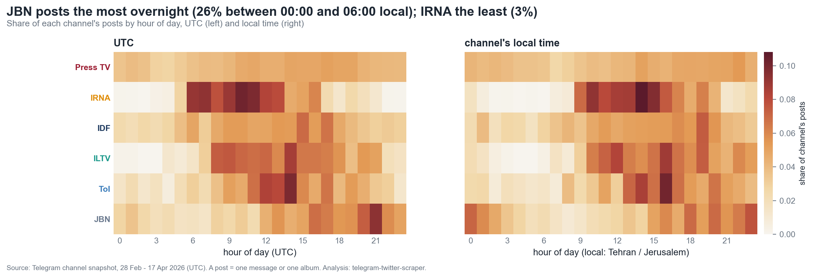
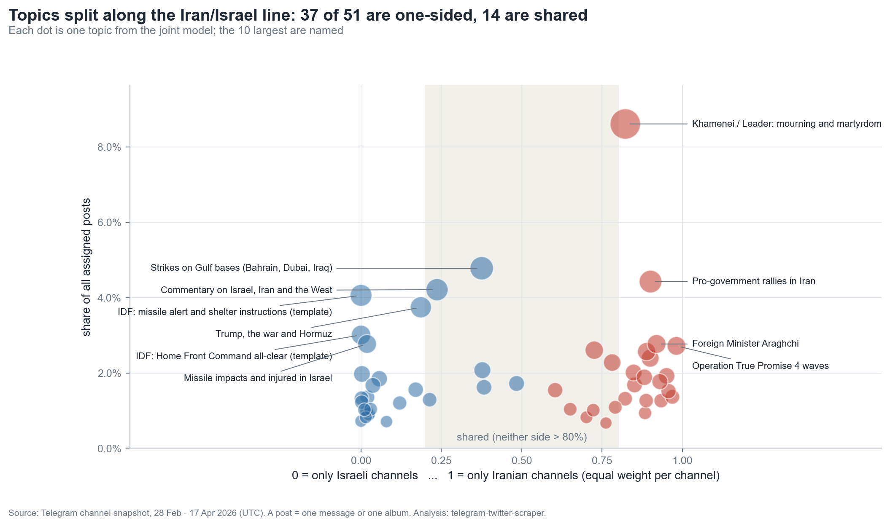
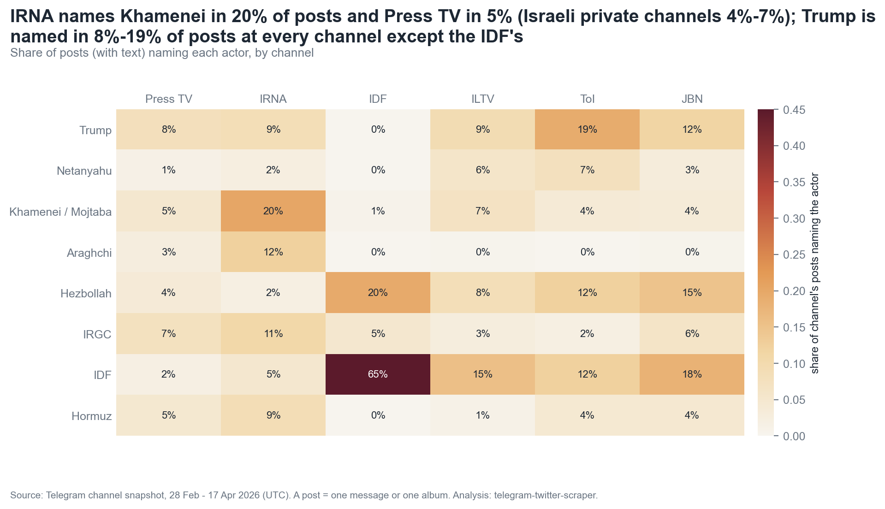
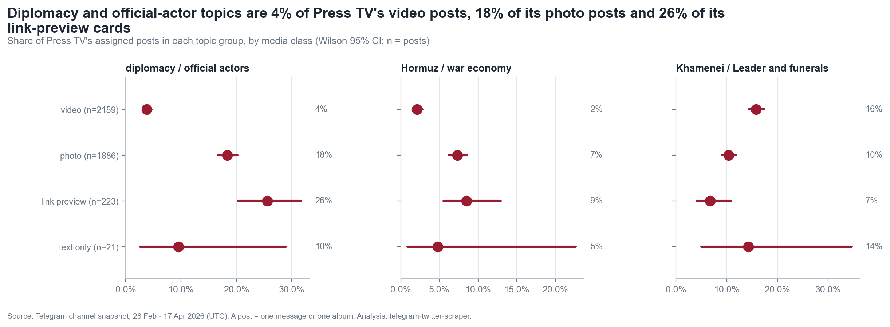
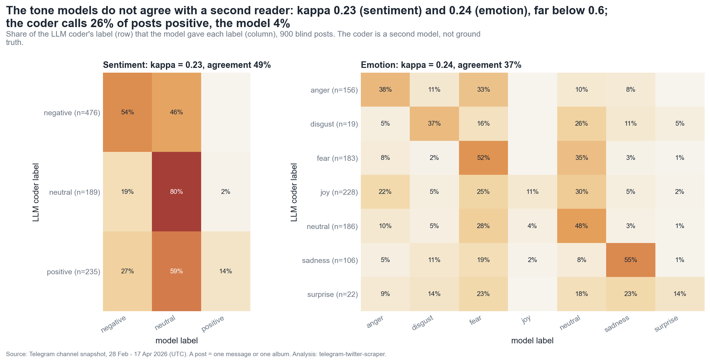

State · Iran
Press TV, IRIB's foreign-language broadcaster
IRNA English, the state news agency
A re-run of my comparison of Iran's English-language state broadcaster with Israeli news channels, on clean data, with a second state channel on each side and stricter tests.
During the first seven weeks of the 2026 war between Iran and the United States and Israel, Press TV published 6,683 posts on Telegram. That is 136 a day, every day, day and night. The next busiest channel in this study, Iran's own state news agency IRNA, managed 33. The Israel Defense Forces' channel managed 29, and The Times of Israel 13.
The first version of this article read that gap, along with several others, as the signature of state ownership. This version tests the same idea with a better design and cleaner data. The posting gap survives and is larger than I first reported. Most of the other differences I attributed to ownership turn out to follow nationality instead, or did not survive the cleanup at all.
Six English-language Telegram channels, every post published between 28 February and 17 April 2026 (UTC), fetched on the same day with full text. A post is one message or one album. Iranian and Israeli outlets now each include a state channel, so ownership and nationality can be separated, at least in part.
Press TV, IRIB's foreign-language broadcaster
IRNA English, the state news agency
Israel Defense Forces, the military's official channel (a spokesperson, not a newsroom)
No English-language private Iranian channel was available. This is the design's biggest gap.
ILTV Israel News
The Times of Israel
Jewish Breaking News (aggregator; ownership unverified)
14,620 messages become 12,221 posts once albums are grouped. Press TV accounts for 55% of them. All intervals below are 95%: bootstrap over days for rates, Wilson intervals for shares.
Measured over the same 49 days, Press TV out-posts every other channel by a factor of 4 to 12. Within Iran, it posts four times as often as IRNA, which is also state-owned. In Israel the pattern runs the other way: the state channel (IDF) posts at 0.58 times the combined rate of the three private channels (95% CI 0.51–0.66). State ownership alone does not predict a high posting rate.
02_tempo.The table puts the corrected multiples next to the first version's figures. In the original week of 7–14 April, Press TV posted 21 times as often as ILTV, not six. The Times of Israel figure was too high, and only the JBN figure was close.
| Press TV ÷ channel | 28 Feb – 17 Apr | 7–14 Apr | 10–17 Apr | First version |
|---|
Its daily rhythm points to the reason. 23% of Press TV's posts go out between midnight and 6 a.m. Tehran time, against 3% for IRNA. IRNA keeps office hours for a domestic agency. Press TV runs an overnight shift for audiences in other time zones. This fits Price's (1994) account of international broadcasting as a contest for foreign loyalties. That is a story about mission, though, and not ownership as such. The fast Israeli aggregator JBN also posts 26% of its output overnight.

02_tempo.I fitted one topic model to all channels together, using the same embeddings and settings for every channel. It finds 51 topics and holds up across five random seeds (mean adjusted Rand index 0.91), though it leaves 34% of posts unassigned. Of the posts it does assign, 40% fall in topics only Iranian channels discuss, 33% in topics only Israeli channels discuss, and 27% in topics both sides cover. These include strikes on Gulf bases, Trump and Hormuz, and commentary on the West.

03_agenda.The first version treated Press TV's coverage of the 40th-day mourning for Ayatollah Khamenei as evidence of a state broadcaster doing legitimacy work that private outlets have no reason to do. The fair test is symmetric: does each country's media commemorate its own dead? It does.
03_agenda.IRNA devotes 12.3% of its posts to Khamenei mourning, four times Press TV's 2.8%. No Israeli channel goes above 0.2%. Israeli commemoration language appears in 1–3% of posts on all four Israeli channels, state and private alike, and almost never on the Iranian ones. The topic model gives the same picture: a Khamenei topic holds 19% of IRNA's assigned posts and 10% of Press TV's, while a Holocaust-remembrance topic holds 10% of The Times of Israel's and 7% of ILTV's. Commemoration splits along nationality, not ownership.
Iran is the most-named entity on five of the six channels. The framing still differs by side. The Iranian state channels tie all three countries together in one post far more often: 45% of IRNA posts and 24% of Press TV posts name Iran, Israel and the United States together, against 7–10% on the private Israeli channels and 1% on the IDF channel. Iranian outlets narrate a US–Israeli war on Iran. Israeli outlets more often narrate Israel's war, with Washington as one actor among several.
04_actors.
04_actors.Coded correctly, Press TV is almost entirely visual: 48% of its posts carry video, 45% a photo, and only 2% are text alone. ILTV (52% video) and JBN (44%) look much the same. The Times of Israel attaches a photo to every post, and the IDF channel is 87% text. These are house formats, and they cut across both ownership and nationality.
The first version said Press TV reserved visuals for diplomacy and official actors, which it read through Nye's (2004) idea of soft power. With videos counted as media, the pattern reverses. Diplomacy and official actors make up 4% of Press TV's video posts, 18% of its photo posts and 26% of its link-preview cards. Video is where the mourning, rallies and strike footage go. The old claim came from video posts sitting in the "text-only" group.

06_media.The first version reported that all four channels shared a fear-dominant emotional baseline. That claim rested on two off-the-shelf classifiers that nobody had checked against this kind of text. This time I drew a blind sample of 900 posts, 150 per channel with the channel hidden, and had a second coder label them. The second coder was a language model (three Claude Sonnet instances, 300 posts each), not a person. That makes it a check of agreement between two models, not a measure of accuracy.
The two readings barely agree. Cohen's kappa is 0.23 for sentiment and 0.24 for emotion, far below the 0.6 I set in advance as the bar for interpreting a label. On the IDF channel agreement is no better than chance. The disagreement has a direction. The classifier calls only 2–7% of posts positive on any channel. The second coder calls 15–45% positive, mostly triumphal strike claims and military communiqués that the classifier reads as neutral or frightening. I therefore make no claim about tone, including convergence.

05_tone; sample and coding protocol in data/validation/.Mission, not ownership. Press TV is an outlier even among state channels; Israel's state channel posts less than its private ones.
Nationality. 73% of assigned posts sit in one-sided topics, and each country commemorates its own.
Nationality, strongest at state outlets. Iranian state channels frame a triangular war with Washington; Israeli channels much less often do.
House format. ILTV and JBN are as video-heavy as Press TV; the "visuals for diplomacy" pattern reverses.
Not measurable with these tools. Neither label passes validation.
Hallin and Mancini's comparative framework, extended beyond the West in their 2012 volume, is more useful here for what the state asks of an outlet than for who owns it. Press TV's distinctiveness lies in its foreign-service mission: the overnight shift, the volume, the steady output through every phase of the war. On agenda and framing, the useful line runs between Tehran and Jerusalem, not between state and private. That is what news-value accounts predict when two national presses cover the same war from opposite sides (Galtung & Ruge, 1965). Herman and Chomsky's (2002) propaganda model, which I leaned on in the first version, describes convergence inside one market system. It says little about adversaries' media.
Snapshot 2026-02-28_2026-04-18_20261002T081854Z, fetched 2 October 2026 with telegram-scraper snapshot; full text, media classified by Telegram media type, albums grouped by grouped_id. Notebooks 00_collect to 06_media in the repository's notebooks/ folder reproduce every number and figure here; key results are collected in docs/study/findings.json. Embeddings: BAAI/bge-small-en-v1.5. Topics: UMAP to 5 dimensions plus HDBSCAN (min cluster size 50), one joint model, stability over 5 seeds. Tone: cardiffnlp/twitter-roberta-base-sentiment-latest and j-hartmann/emotion-english-distilroberta-base. Entities: spaCy en_core_web_sm. Rates use a day-level bootstrap (2,000 draws); shares use Wilson intervals; multiple tests are Benjamini–Hochberg adjusted.